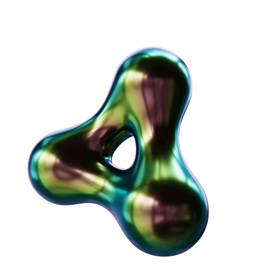

De Vooruitblik / Radio 1
Twee weken vooruitblikken
Radio 1 maakt opnieuw een programma rond De Vooruitblik, in de kerstvakantie.

- 12–13uelke weekdag op Radio 1
- 21–25 decmaandag tot vrijdag
- 28 dec – 1 janmaandag tot vrijdag
Het programma
Radiohost Jacotte Brokken gaat in gesprek met de wetenschappers van De Vooruitblik over de thema’s uit het boek en de maatschappelijke ontwikkelingen die ons begrip van 2027 helpen verdiepen.
Zo vormt het programma een belangrijke aanvulling op zowel het boek als de videopodcasts.